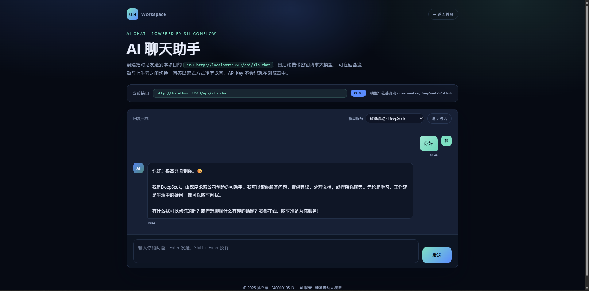
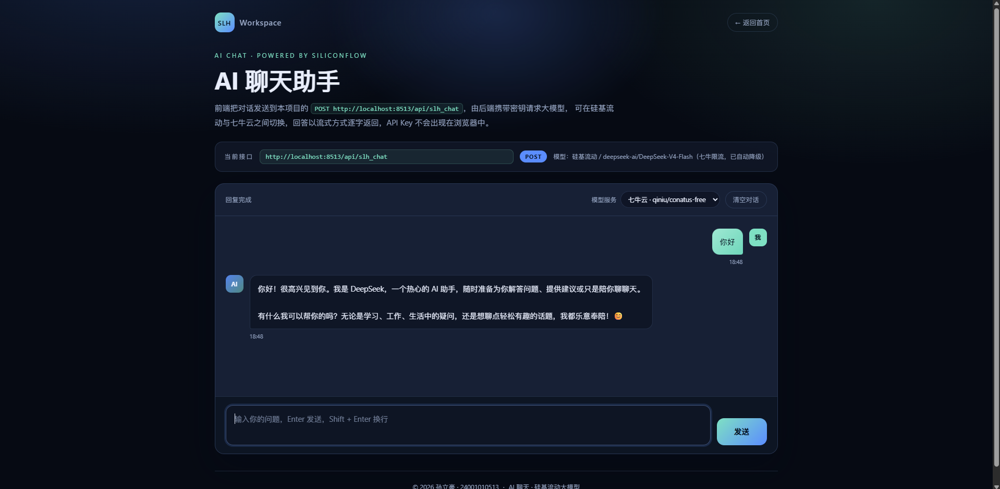
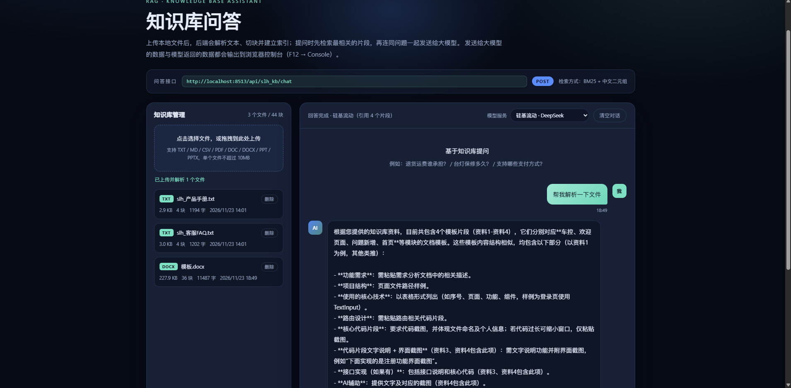
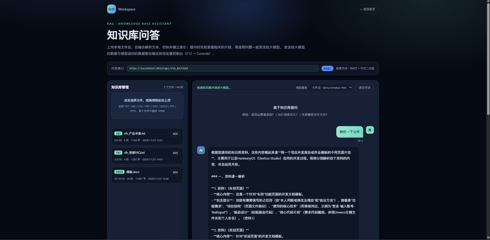
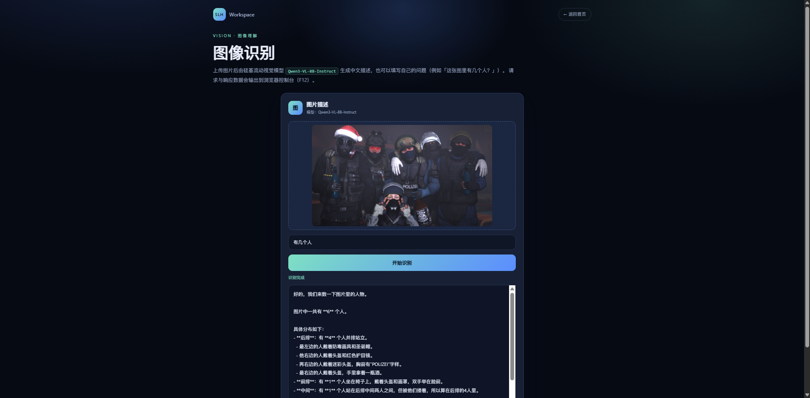
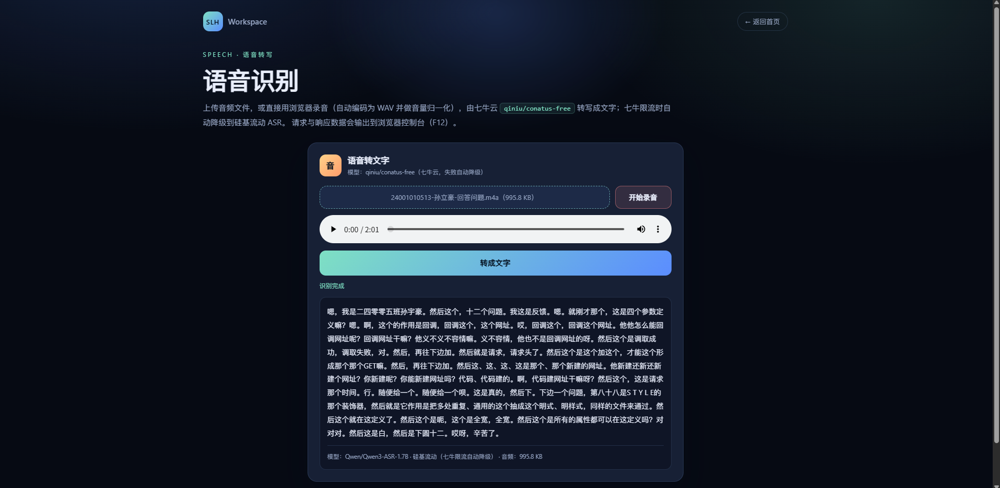

前端把对话发给本地后端，由后端携带密钥转发到硅基流动或七牛云；支持多轮上下文与逐字流式输出， 七牛免费模型被限流时自动降级到硅基流动，并在页面上给出提示。


上传 TXT / PDF / DOCX / PPTX 文档，后端完成解析、切块与索引；提问时先检索最相关的知识片段， 再连同问题一起发送给大模型，回答中标注引用的资料来源。


上传本地图片，调用 Qwen3-VL 多模态大模型识别画面内容，可自定义提问（例如「这张图里有几个人」）， 返回画面主体、场景与文字信息。

选择音频文件或直接用浏览器录音（自动编码为 WAV 并做音量归一化），调用七牛云 ASR 转写中文语音， 免费模型限流时自动降级到硅基流动。
